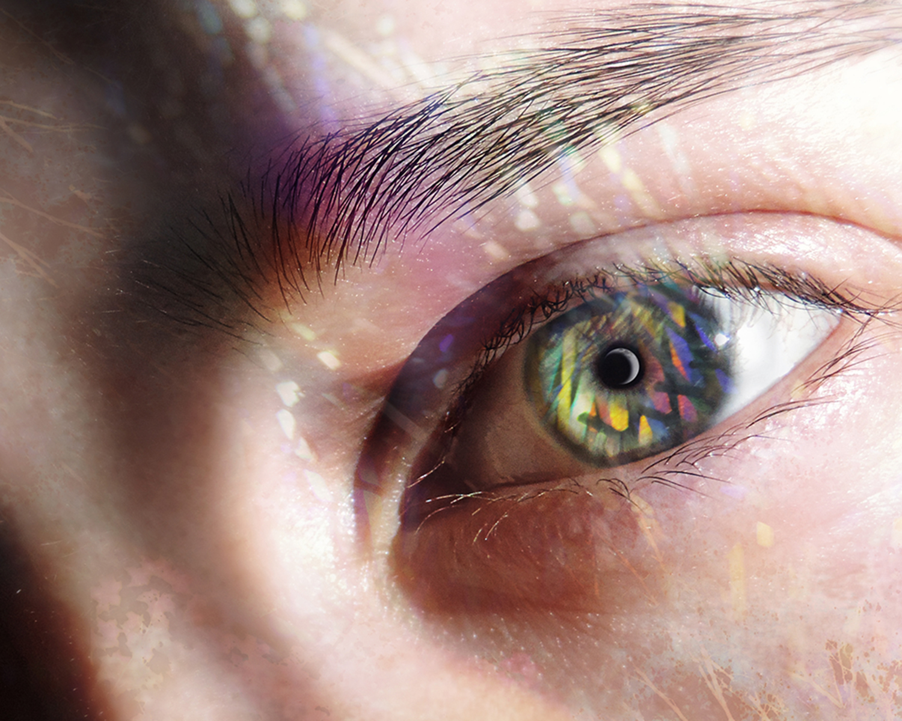

The Student

Hi there!
I’m Daniella, a Graphic Design major at OCAD University. I’m really excited to be delving into the foreign world of code and programing with this course led by Professor Ian Jarvis. As a creative person I’ve dabbled in dozens of different mediums from traditional graphite drawing, to painting, to digital art, to tactile mixed media works, to paper sculpture, to string arts, and embroidery… the list goes on. However, last semester I dipped my toes into generative art for the first time using P5.js and found it fascinating. The unpredictability in the creative process was unlike anything I’ve ever done before. This term I'm thrilled to be broadening my skills in the media of code.
Join me for the next 6 weeks to see my learning in real time with this portfolio site.
Use the console in Developer Tools to see the results.
The Person
I’m Daniella, and I also go by Dani on occasion.
Here are some fun facts about me:
- I have a killer sweet tooth (donuts are my personal weakness)
- I don’t have a favourite colour (I do however have favourite colour pallets, here is one)
- I really love dogs (especially my very sassy 7 year old maltese/poodle mix)
- I am a proud houseplant addict (I currently care for 50 plants and counting)
- I have a two titanium rods and 20-something screws holding my spine straight
The Identity
Feel free to look at more of my work on my Instagram page @dani.ella.art